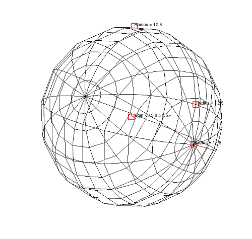

The sphere tool allows you to position a sphere relative to plots that exist in the visualization window. The sphere tool, shown in figure, provides several hot points that are used to position and scale the sphere. The hot point nearest the center of the sphere is the origin hot point and it is used to translate the sphere in a plane parallel to the screen. The other hot points are all used to scale the sphere. To scale the sphere, click on one of the scaling hot points and move the mouse towards the origin hot point to shrink the sphere or move the hot point away from the origin to enlarge the sphere.
|  |
| Figure 8 |